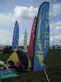
Une bonne organisation, une surface de vol magnifique, herbue et sans arbres proches, d'étendue pratiquement infinie puisqu'on n'a pas pu tout occuper, plein de cerfs-volistes, du beau temps dans l'ensemble, un bon cru de fête du CVCF ! Il y avait même du public. Il faut dire qu'on est à la campagne pratiquement en ville...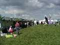
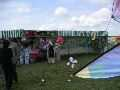
L'Accueil CVCF avec son expo photo sur l'historique du cerf volant, son passé militaire, celui de la photo aérienne, et plus loin, une autre expo de photos récentes par cerf-volant signées de spécialistes modernes comme Christian Bécot ou Bernard-Noel Chagny avec télécommande, télévision, bien sûr, mais toujours le coup d'oeil artistique du photographe.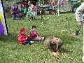
Des marchands divers avec des jouets pour enfants, des articles en bois, des tubes carbone, évidemment, mais aussi des moulinets, des générateurs de bulle de savon, tout un petit monde chatoyant et mobile.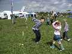
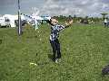
Même des lance-fusées qui montent à 10 m quand un enfant bondit sur la "bouillotte", et à 20 m quand c'est un adulte dépassant le quintal mais quand même capable de sauter.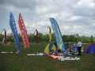
Sur le terrain, des bannières comme celles du CVCF, de ses annexes, ou de clubs locaux,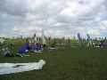
et des alignements de tentes avec des sacs et des sacs... pleins de merveilles.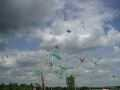
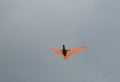
Je ne parle pas de Megoel sur lequel j'ai ramé une bonne partie du dimanche pour rester en vol. Mais il avait un concurrent assez original puisque parfait monofil mais aussi pilotable 2 lignes (signé Bruno, je crois).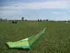
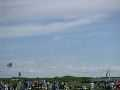
Plusieurs arches et trains d'Eddies ou de coccinelles ont volé, dont celui de l'annexe de Beauce particulièrement soigné, en spi, chaque cerf-volant étant soigneusement réalisé en appliqué, ourlé, étiqueté et numéroté, portant le nom du constructeur, l'ensemble étant doté d'une caisse en bois deux tons vernie, avec couvercle matelassé pour s'asseoir après les efforts accomplis !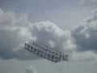
Intéressant également, un joli petit "multi-caisse" d'un peu plus d'un mètre d'envergure, beau travail.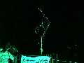
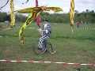
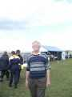
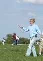
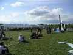
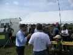